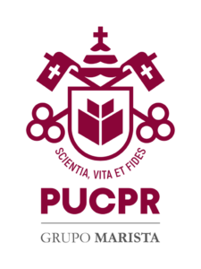
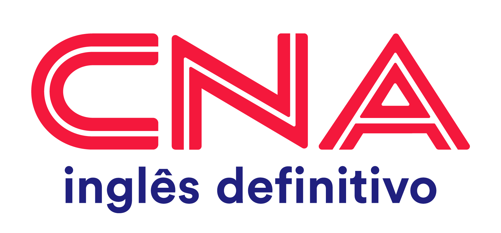

ResumoSummary
Desenvolvedor na Arlequim e estudante de Análise e Desenvolvimento de Sistemas na PUCPR, mexendo com
computadores desde os 14 anos. Desenvolvo sites e aplicativos, incluindo um sistema web completo com banco de
dados PostgreSQL, testes automatizados e integração contínua que hoje apoia o atendimento às escolas públicas
de Nova Lima. Inglês avançado e muita vontade de aprender e crescer na área de desenvolvimento.
Developer at Arlequim and Systems Analysis and Development student at PUCPR, into computers since I was 14.
I build websites and apps, including a complete web system with a PostgreSQL database, automated tests and
continuous integration that now supports the public schools of Nova Lima, Brazil. Advanced English and a
strong drive to keep learning and growing as a developer.
Experiência profissionalExperience
DesenvolvedorDeveloper · Arlequim
Atual · RemotoCurrent · Remote
- Desenvolvimento de sites e aplicativos.
- Criação do Oficineiro+, aplicativo auxiliar que melhorou o fluxo de atendimento às escolas públicas de Nova Lima (veja em Projetos).
- Criação de mundos educacionais no Minecraft Education.
- Building websites and apps.
- Created Oficineiro+, a support app that improved how the public schools of Nova Lima are served (see Projects).
- Designing educational worlds in Minecraft Education.
ProjetosProjects
Sistema web para gestão das oficinas de tecnologia educacional nas escolas da rede municipal:
presença com conferência de localização, grade de aulas, registro de atividades, relatório mensal
e visitas de campo, com permissões diferentes para cada perfil de usuário.
Web app for managing the educational technology workshops in a city's public schools: attendance with
location check-in, class schedules, activity logs, monthly reports and field visits, with different
permissions for each user role.
- Regras de negócio e de acesso no banco, com Row Level Security em todas as tabelas e auditoria das operações sensíveis.
- Testes de banco (pgTAP), testes de interface com Playwright e checagem de acessibilidade, rodando em CI no GitHub Actions.
- Business and access rules live in the database, with Row Level Security on every table and auditing of sensitive operations.
- Database tests (pgTAP), UI tests with Playwright and accessibility checks, running in CI on GitHub Actions.
Mostra os eventos ativos e os próximos do jogo Arc Raiders por mapa, consumindo a API do MetaForge, com slash commands e comandos de diversão para o servidor.
Shows the active and upcoming Arc Raiders events per map using the MetaForge API, with slash commands and fun commands for the server.
Sistema de linha de comando para gestão acadêmica, feito como atividade da faculdade: menu principal e cadastro de estudantes.
Command-line academic management system built as a course assignment: main menu and student registration.
Formulário de pesquisa responsivo, com validação nativa do navegador.
Responsive survey form with native browser validation.
OutrosOther
- Sistema de login e cadastro em React.
- Este currículo, feito em HTML e CSS e publicado no GitHub Pages.
- Em desenvolvimento: rede social simples e uma API com front-end próprio.
- Sign-up and login system in React.
- This resume, built in HTML and CSS and published on GitHub Pages.
- In progress: a simple social network and an API with its own front end.
FormaçãoEducation

Em andamento · EADIn progress · Online
PUCPR · Tecnólogo (2,5 anos)PUCPR · Associate degree (2.5 years)
- Fundamentos de programação, arquitetura de software, banco de dados e SQL.
- Desenvolvimento com Python e Java, padrão MVC e versionamento com Git/GitHub.
- Programming fundamentals, software architecture, databases and SQL.
- Development with Python and Java, the MVC pattern and version control with Git/GitHub.

Ensino MédioHigh School
Concluído em 2020Completed in 2020
Colégio Ideal
Cursos complementaresCourses
-

InglêsEnglish · CNA
3 anos · Presencial3 years · In person
-
 Desenvolvimento web e PythonWeb development and Python · Codecademy
6 meses · Online6 months · Online
Desenvolvimento web e PythonWeb development and Python · Codecademy
6 meses · Online6 months · Online
-
Desenvolvimento webWeb development · freeCodeCamp
3 meses · Online3 months · Online
-
 Desenvolvimento web, Python e JavaWeb development, Python and Java · Udemy
2 meses · Online2 months · Online
Desenvolvimento web, Python e JavaWeb development, Python and Java · Udemy
2 meses · Online2 months · Online
HabilidadesSkills
- LinguagensProgramming
- FerramentasTools
- SistemasSystems
- OutrosOther
- IdiomasLanguages